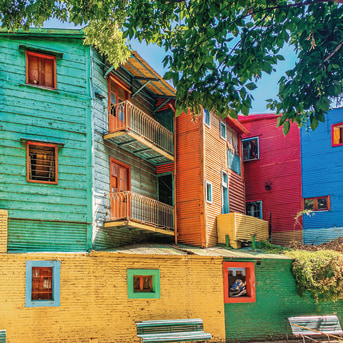
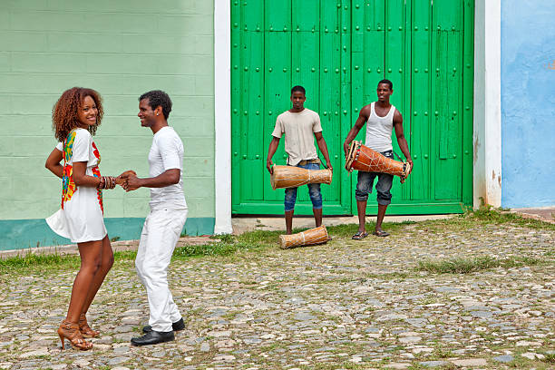

VPDVOYAGES
Patrick Daroque - Travel Planner
Patrick Daroque - Travel Planner
6 nouvelles propositions en cours de finalisation.
Cliquez sur « + » pour lire le résumé, puis contactez-moi.

Janvier 2027
Vivez l’énergie unique du jazz cubain au cœur de La Havane. Concerts, rencontres avec des musiciens, immersion dans les quartiers historiques et ambiance nocturne inoubliable.
Buenos Aires & Mendoza
Une expérience profonde alliant danse, émotion et bien-être. Cours et milongas à Buenos Aires, puis immersion dans les vignobles de Mendoza pour prolonger le voyage intérieur.
Cali, Colombie
La capitale mondiale de la salsa. Cours avec des professeurs locaux, soirées dans les meilleurs clubs, rencontres avec des danseurs et immersion totale dans la culture salsera de Cali.

Espagne
Architecture, plages, gastronomie et vie de quartier. Une escapade méditerranéenne entre modernité et héritage, à vivre à votre rythme.

BSAS • Mar del Plata • Tres Arroyos • Pigüé
L’Argentine hors des circuits classiques. De Buenos Aires à la côte atlantique, puis les plaines de Tres Arroyos et Pigüé. Traditions, rencontres et paysages intimes.

La Havane
Deux danses, une même passion. Alternance de cours et soirées salsa et tango à La Havane, rencontres avec des danseurs et immersion dans l’ambiance nocturne et culturelle de la ville.